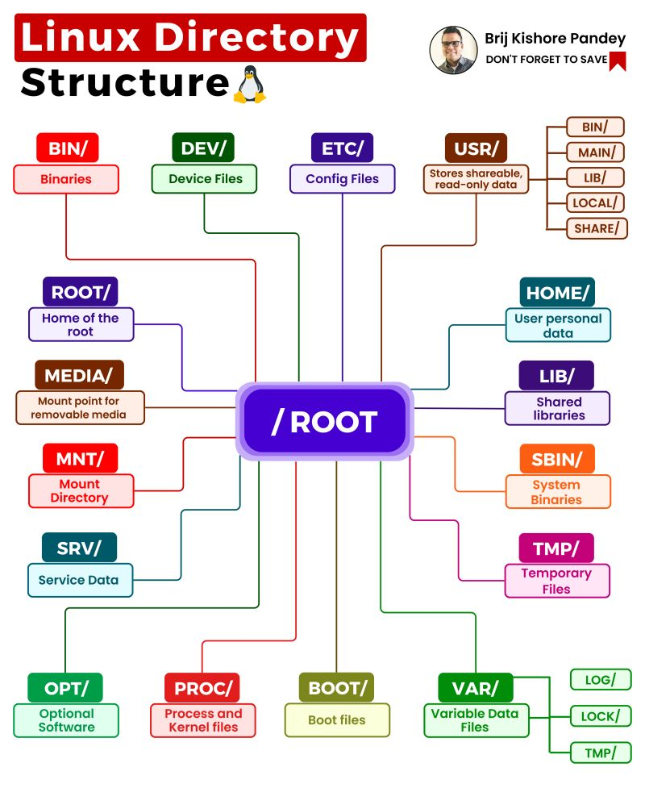

Zarządzanie systemem
Serwisy i demony
/etc/systemd/system/
systemctl
W większości dystrybucji Linuxa, zarządzanie serwisami i demonami odbywa się za pomocą systemd. Wszystkie pliki konfiguracyjne znajdują się w katalogu /etc/systemd/system/.
Do zarządzania serwisami i demonami korzysta się z aplikacji systemctl. Poniżej znajdują się najważniejsze komendy:
systemctl start nazwa_serwisu- uruchamia serwissystemctl stop nazwa_serwisu- zatrzymuje serwissystemctl restart nazwa_serwisu- restartuje serwissystemctl status nazwa_serwisu- sprawdza status serwisu. Pokazuje nie tylko status, ale także wyświetla logi.systemctl enable nazwa_serwisu- ustawia serwis do uruchamiania przy starcie systemusystemctl disable nazwa_serwisu- usuwa serwis z uruchamiania przy starcie systemu
Składnia plików opisujących serwisy jest dosć prosta.
Przykładowy plik konfiguracyjny (/etc/systemd/system/http-map-socat.service):
[Unit]
Description=Map HTTP port (80) to port 80 of another machine using socat
#po jakich pozostałych serwisach powinien się uruchomić (lista podzielona spacjami)
After=network.target netbird.service
[Service]
ExecStart=socat TCP-LISTEN:80,fork TCP:100.81.47.39:80
RestartSec=15
Restart=always
StandardOutput=syslog
StandardError=syslog
[Install]
WantedBy=multi-user.target
Serwisy mogą mieć wiele instancji. Kiedy w nazwie pliku/seriwsu pojawia się @ to część po tym znaku jest nazwą instancji (np. usb-mount@.service). Wtedy uruchamiając serwis systemctl start usb-mount@sdb1.service towrzymy serwis, którego nazwą jest sdb1. W pliku konfiguracyjnym serwisu jego nazwę reprezentuje %i lub %I (ten drugi wariant to nazwa poddana normalizacji).
Automount usb devices with udev and systemd
Logi systemowe
Do prostego wyświetlania logów kernela może być uzyta komenda dmesg
sudo dmesg
Przydatne flagi to:
-w--follow- podążanie za kolejnymi logami-T- czas w formacie godziny (a nie liczony od startu)
Do bardziej zaawansowanych zastosowań można używać komendy journalctl.
Przykładowa komendy
journalctl --list-boots # wypisz ostatnie uruchomienia oraz ich czasy trwania
journalctl -b-1 # wyświetl logi tylko z ostatniego uruchomienia (oznaczonego jako -1)
Domślne foldery systemowe

TODO opisz te najważniejsze dla mnie
/home//mnt/tmp/
Dyski i storage
Do listowania dysków używa się komendy lsblk
$ lsblk
NAME MAJ:MIN RM SIZE RO TYPE MOUNTPOINT
sda 8:0 0 465,8G 0 disk
├─sda1 8:1 0 512M 0 part /boot/efi
├─sda2 8:2 0 1K 0 part
└─sda5 8:5 0 465,3G 0 part
├─vgubuntu-root 253:0 0 464,3G 0 lvm /
└─vgubuntu-swap_1 253:1 0 980M 0 lvm [SWAP]
Do montowania manualnego montowania dysków można wykorzystać komendę mount (w praktyce tego typu zagadnienia mają znaczenie na serwerach, bo w dekstopowych systemach dyski są montowane automatycznie)
# Automatycznie zamontuj dyski z /etc/fstab
sudo mount
# Zamontuj DYSK w danej lokalizacji
sudo mount /dev/sda1 /mnt/USB
# Odmontowywanie
sudo umount /mnt/USB
Do automatycznego montowania oraz opisywania dysków podczas bootowania systemu warto użyć konfiguracji z /etc/fstab/.
# <file system> <mount point> <type> <options> <dump> <pass>
# / was on /dev/nvme0n1p2 during installation
UUID=026c66e5-d1c4-444a-ba12-bcda1b15438f / ext4 errors=remount-ro 0 1
# /boot/efi was on /dev/nvme0n1p1 during installation
UUID=8339-1FA4 /boot/efi vfat umask=0077 0 1
/swapfile none swap sw 0 0
/dev/sda1 /mnt auto defaults,noauto,user 0 0
Udev
Udev to system umożliwiający automatyczną obsługę zdarzeń związanych z urządzeniami. zdarzenia generowane przez udev dotyczą zdarzeń takich jak np podłąćzenie/odłączenie urządzeń. Z pomocą udeva możemy ustalić zasady obsługi takiego urządzenia (jak np ustalenie miejsca montowania) bądź uruchamiać skrypty dla wybranych zdarzeń.
PLiki z konfiguracjami udev znajdują się w folderze /etc/udev/rules.d/ (np. 60-antimicrox-uinput.rules ).
Przykładowe konfiguracje wyglądają w ten sposób:
#Enable user access to keyboard using uinput event generator
SUBSYSTEM=="misc", KERNEL=="uinput", OPTIONS+="static_node=uinput", TAG+="uaccess"
# dla urządzeń pasujących do regexa z subsystemu usb uruchom skrypt gdy urządzenie jest podłączane
KERNEL=="sd[a-z][0-9]", SUBSYSTEMS=="usb", ACTION=="add", RUN+="/bin/systemctl start usb-mount@%k.service"
Syntax:
%k,$kernel-wyrażenie podmieniane dla wartości KERNELa%n,$number- kernelowy numer dla urządzenia, np dla/dev/sda1jest to1
Materiały: writing udev rules, About udev-Oracle.
Bootowanie i GRUB
Podczas bootowania GRUB wybiera wpis opisujący obecną konfigurację (czyli np jaki kernel użyć z jakimi flagami etc.). Jego konfigurację można znaleźć w pliku /boot/grub2/grub.cfg jednak jego edycja jest niezalecana.
Firewalle i sieć
Podstawowa Konfiguracja
Do sprawdzania konfiguracji sieciowej można użyć komendy ifconfig lub ip a (ip addr).
Wypiszą one wtedy dostępne interfejsy, ich adresy, maski, gatewaye itp.
Do prostego uruchomienia danego interfejsu (przy działającym DHCP) można użyć komendy dhclient INTERFEJS -v (czyli np dhclient eth0 -v).
W trudniejszych wypadkach używa się komendy ip
komenda ip
Podstawowy syntax warto objerzeć tutaj.
ip można go uzyć np do szybkiego przypisania adresu do interfejsu
Używamy tu komendy o składni: ip a add IP/MASKA dev INTERFACE (dev to skrót od device). Może to być np ip a add 192.168.1.119/24 dev eth0
Do ustawiania bram warto użyć komendy route link
TODO
Firewalle
TODO